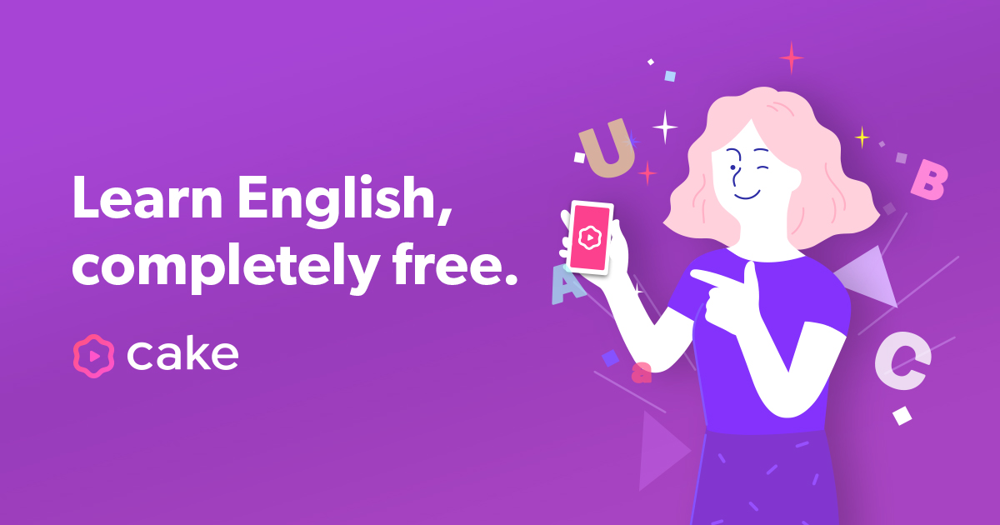
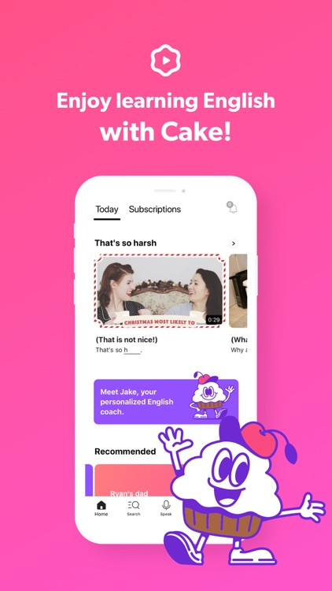

Features:-
Fun, short English conversation videos updated every day!
Learn English fast, completely free.
Learn real English expressions curated from YouTube. See similar phrases in one place and spend just a few minutes a day to improve your English!
If you want to improve your English speaking skills, look no further. Our “Cake” app offers speaking practices that simulate conversations with native speakers!
Check your pronunciation with our AI speech recognition. Simply record your voice and get immediate feedback. Soon you will learn to sound like a native speaker.
100% free!
“Cake” app is completely free and there are no annoying ads. We are committed to helping you improve your English. Learn English with “Cake” today
Reviews:-
xavier blogger
It's been really fabulous with drill mode to learn in new innovative ways. It was so amazing to be part of cake learning app which is to be fastest and easiest way of learning english with several creative features loaded in this app.. It's been ever time Ectasy experience to be with this app.
Mrittan Rajkumar
Best English learning app and it's so easy to use. The way they teach is amazing it helps me so much. Before using this app I'm so bad at speaking English but now after using cake I can talk easily with others. Best English learning app ever. I will surely recommend this app to my friends and family so that they can learn English in easy way.
Ribs
I personally do not think this app will make an absolute beginner become fluent in English. It helps your social English skills (like the kind that helps you communicate with foreigners while not sounding like a noob) but that's intermediate stuff. Frankly I'd rate the app higher if it has written tests, you gotta help people remember the words somehow, probably by typing it out, spelling is important.

ADDITIONAL INFORMATION:-
Updated
March 4, 2021
Size
Varies with device
Installs
50,000,000+
Current Version
3.2.0
Offered By
Cake Corp.
Visit website
mycake.me@gmail.com